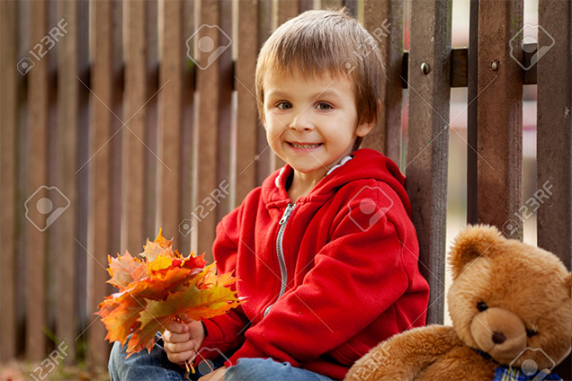

Медведь который спас жизнь
Хочу рассказать историю нашей болезни, а точнее историю выздоровления моей дочурки Аленки, рассказать для того, чтобы родители, оказавшиеся лицом к лицу с такой страшной болезнью как злокачественная опухоль почек, не отчаивались, не опускали руки, а знали о том, что с этим злом можно бороться. Для этого нужно бесконечно любить своего ребенка и верить в его излечение и тогда “чудо” обязательно свершится. Хочу рассказать историю нашей болезни, а точнее историю выздоровления моей дочурки Аленки, рассказать для того, чтобы родители, оказавшиеся лицом к лицу с такой страшной болезнью как злокачественная опухоль почек, не отчаивались, не опускали руки, а знали о том, что с этим злом можно бороться. Для этого нужно бесконечно любить своего ребенка и верить в его излечение и тогда “чудо” обязательно свершится. Хочу рассказать историю нашей болезни, а точнее историю выздоровления моей дочурки Аленки, рассказать для того, чтобы родители, оказавшиеся лицом к лицу с такой страшной болезнью как злокачественная опухоль почек, не отчаивались, не опускали руки, а знали о том, что с этим злом можно бороться.

Вера в игрушку как в живое существо
Хочу рассказать историю нашей болезни, а точнее историю выздоровления моей дочурки Аленки, рассказать для того, чтобы родители, оказавшиеся лицом к лицу с такой страшной болезнью как злокачественная опухоль почек, не отчаивались, не опускали руки, а знали о том, что с этим злом можно бороться. Для этого нужно бесконечно любить своего ребенка и верить в его излечение и тогда “чудо” обязательно свершится. Хочу рассказать историю нашей болезни, а точнее историю выздоровления моей дочурки Аленки, рассказать для того, чтобы родители, оказавшиеся лицом к лицу с такой страшной болезнью как злокачественная опухоль почек, не отчаивались, не опускали руки, а знали о том, что с этим злом можно бороться. Для этого нужно бесконечно любить своего ребенка и верить в его излечение и тогда “чудо” обязательно свершится.
Хочу рассказать историю нашей болезни, а точнее историю выздоровления моей дочурки Аленки, рассказать для того, чтобы родители, оказавшиеся лицом к лицу с такой страшной болезнью как злокачественная опухоль почек, не отчаивались.

Верьте в своих детей и чудо обязательно произойдет
Хочу рассказать историю нашей болезни, а точнее историю выздоровления моей дочурки Аленки, рассказать для того, чтобы родители, оказавшиеся лицом к лицу с такой страшной болезнью как злокачественная опухоль почек, не отчаивались, не опускали руки, а знали о том, что с этим злом можно бороться. Для этого нужно бесконечно любить своего ребенка и верить в его излечение и тогда “чудо” обязательно свершится.
Благодарность и отчеты о потраченных средствах
Хочу рассказать историю нашей болезни, а точнее историю выздоровления моей дочурки Аленки, рассказать для того, чтобы родители, оказавшиеся лицом к лицу с такой страшной болезнью как злокачественная опухоль почек, не отчаивались, не опускали руки, а знали о том, что с этим злом можно бороться. Для этого нужно бесконечно любить своего ребенка и верить в его излечение и тогда “чудо” обязательно свершится.